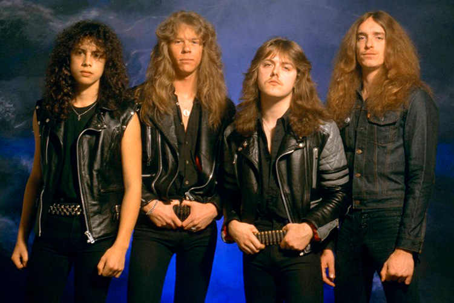

Fundada nos EUA em 1981 por James Hetfield (vocal/guitarra), Lars Ulrich (bateria), Dave Mustaine (guitarra solo) e Ron McGovney (baixo). Posteriomente, Cliff Burton entrou na banda no lugar de Ron e Kirk Hammet entrou no lugar de Dave Mustaine (que futuramente iria criar a melhor banda de trashmetal). Sendo um dos maiores nomes do thrash metal, com álbuns influentes como Master of Puppets e Metallica (o "Black Album").
 voltar